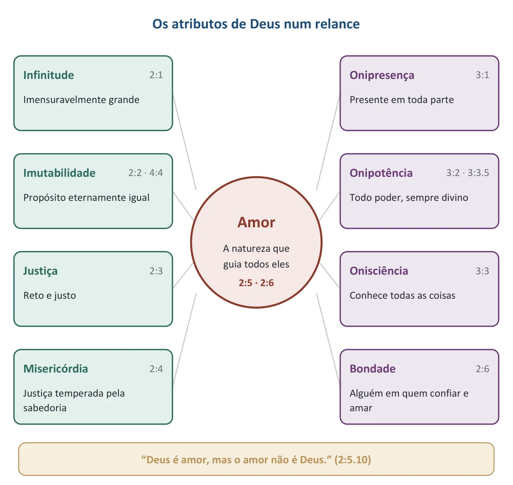
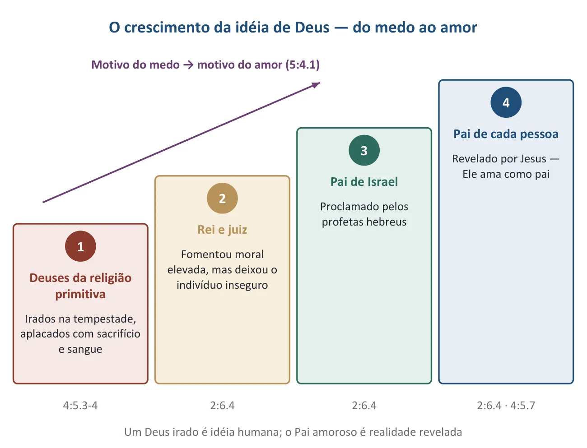
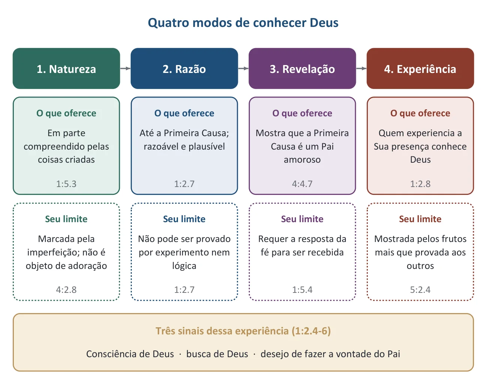

O Pai Universal — Quem é Deus?
Leitura: Documento 1 · Documento 2 · Documento 3 · Documento 4 · Documento 5

Os cinco primeiros documentos de O Livro de Urântia apresentam Deus como Aquele que é infinito e, ainda assim, uma pessoa que pode entrar em comunhão conosco — um Pai. Deus está presente em toda parte, sabe todas as coisas e não muda, mas o amor guia cada um desses atributos, e não existe um Deus irado a ser aplacado com sacrifícios. Esse Deus é conhecido mais pela experiência do que por provas, e Ele já vive em cada pessoa pelo espírito que enviou.
História de abertura
Pergunte a uma menina de cinco anos como é o pai dela. Ela tem pouca idéia do que ele faz no trabalho ou de quanto ele possui. Mesmo assim, responde sem hesitar um instante: “Meu pai me ama”. Ela não compreende o pai por inteiro, mas o conhece.
Uma pessoa diante de Deus é muito parecida com essa criança. Os documentos 1 a 5 estão cheios de palavras grandes — infinito, eterno, absoluto — e não há problema em não captar todas elas. O Conselheiro Divino que escreveu esses cinco documentos quer, no fim, dizer uma única frase: Deus é o vosso Pai.
Nesta semana vemos, passo a passo, como é esse Pai e como podemos chegar a conhecê-Lo.
1. O Infinito vem ao nosso encontro como pessoa
A Primeira Fonte e Centro
O nome que O Livro de Urântia mais usa para Deus é “o Pai Universal”, e o nome mais usado em todo o universo é “a Primeira Fonte e Centro”. Tudo vem Dele, e tudo gira em torno Dele.
O PAI Universal é o Deus de toda a criação, é a Primeira Fonte e Centro de todas as coisas e todos os seres. Pensai em Deus primeiro como um criador, depois como um controlador e finalmente como um sustentador infinito.1:0.1
Criador, controlador, sustentador: Deus fez o universo, governa-o e o mantém em existência ainda agora. Contudo, o documento 1 não dá muita importância ao nome em si.
O nome que Lhe é dado é de pouca importância; o que é significativo é conhecê-Lo e aspirar a ser como Ele.1:1.6
Deus é uma pessoa
Dizer que Deus é infinito pode facilmente fazer com que Ele pareça uma força fria ou uma lei imensa. O documento 1 se antecipa a esse mal-entendido.
Não permitais que a magnitude e a infinitude de Deus obscureçam ou eclipsem a vossa visão da personalidade Dele. “Ele, que planejou o ouvido, não escutará? Ele, que formou o olho, não verá?” O Pai Universal é o auge da personalidade divina1:5.1
Personalidade é a palavra-chave desta semana. Dizer que Deus é uma pessoa não significa que Ele tenha um corpo como o nosso. Significa que Ele tem consciência de Si, tem vontade e propósito, e nos conhece e pode compartilhar comunhão conosco.
Não obstante Deus ser um poder eterno, uma presença majestosa, um ideal transcendente, um espírito glorioso; embora Ele seja tudo isso e infinitamente mais, ainda assim, Ele é, verdadeiramente e para sempre, uma personalidade perfeita de Criador, uma pessoa que pode “conhecer e ser conhecida”, que pode “amar e ser amada”, e que pode demonstrar amizade por nós; e assim vós podeis ser reconhecidos, como outros seres humanos o foram, como amigos de Deus.1:5.8
A frase sobe por uma expressão elevada após outra, depois vira nas palavras “ainda assim” e chega a “amigos”. O documento 1, seção 7, explica por que a personalidade importa tanto.
O conceito da personalidade da Deidade facilita a amizade; favorece a adoração inteligente; promove uma confiança arejada. As interações podem dar-se entre coisas não pessoais, mas não a amizade. A relação de amizade entre o pai e o filho, tanto quanto entre Deus e o homem, não pode ser desfrutada, a menos que ambos sejam pessoas.1:7.1
O Sol e a Terra atraem-se mutuamente, mas não sentem falta um do outro. Como Deus e o homem são ambos pessoas, entre eles é possível algo mais do que a atração: a comunhão. E essa comunhão não é um caminho no qual o eu desaparece.
O homem consegue a união com Deus, mas não como uma gota de água poderia encontrar a unidade com o oceano. O homem consegue a união divina por meio de uma comunhão recíproca espiritual progressiva, pelo relacionamento da personalidade com o Deus pessoal, ao atingir, de um modo crescente, a natureza divina, por meio de uma conformidade inteligente, buscada com todo o seu coração, à vontade divina.1:7.2
Quando uma gota de água se dissolve no mar, a gota deixa de existir. A união que O Livro de Urântia descreve é diferente. Cada pessoa continua sendo ela mesma até o fim, tornando-se cada vez mais semelhante ao Pai.
Como o Infinito se aproxima
Mas como pode o Infinito entrar em comunhão com um ser humano finito? O documento 2 responde que Deus, por amor, atenua a Sua própria infinitude.
Dessas maneiras e de muitas outras, desconhecidas para vós e muito além da vossa compreensão finita, o Pai do Paraíso, voluntária e amorosamente condescende e, de várias formas, modifica, dilui e atenua a Sua infinitude, de modo a poder chegar mais perto das mentes finitas das Suas criaturas, os Seus filhos.2:1.8
“Dessas maneiras” refere-se aos três caminhos nomeados no parágrafo imediatamente anterior.
em primeiro lugar, o papel das personalidades dos Filhos de Deus no Paraíso, as quais, ainda que perfeitas em divindade, também participam, muitas vezes, da própria natureza do sangue e da carne das raças planetárias, tornando-se um de vós e um convosco … Em segundo lugar está a existência das personalidades do Espírito Infinito, as várias ordens de hostes seráficas e de outras inteligências celestes, que se aproximam dos seres materiais de origem inferior para ministrar-lhes ensinamentos e servir a eles, de tantas maneiras. … E, em terceiro lugar, contamos com a existência dos Monitores Misteriosos impessoais, os Ajustadores do Pensamento, autênticas dádivas do grande Deus, Ele próprio, enviadas sem anunciação nem explicação, para residir em seres como os humanos de Urântia.2:1.7
O documento 5 acrescenta mais um: o circuito da personalidade, que liga cada personalidade diretamente ao Pai (5:6.10). A figura abaixo reúne esses caminhos num único quadro.

Palavras novas
- Primeira Fonte e Centro: o nome mais usado para Deus em todo o universo. Significa que todas as coisas vêm Dele e giram em torno Dele.
- Personalidade: aquilo que torna um ser consciente de si, capaz de escolher e capaz de compartilhar comunhão com os outros. Só o Pai Universal outorga a personalidade (5:6.4).
- Filho Criador: um Filho de Deus que faz e governa um universo local. Michael de Nébadon, o Filho Criador do nosso universo, veio a este mundo como Jesus.
- Filho Eterno e Espírito Infinito: as duas Pessoas que, com o Pai Universal, formam a Trindade do Paraíso. Nós as encontramos na semana 3.
2. Os atributos de Deus — presente em toda parte, conhecedor de tudo, imutável
Os documentos 2 e 3 percorrem um a um os atributos de Deus — os traços que mostram que tipo de Ser Deus é. A cada palavra, O Livro de Urântia também explica o que ela significa para a nossa relação com Ele.

Presente em toda parte
A capacidade do Pai Universal de estar presente em todas as partes, e ao mesmo tempo, constitui a Sua onipresença. Apenas Deus pode estar em dois, em inúmeros lugares, ao mesmo tempo.3:1.1
Se Deus está em toda parte, por que algumas pessoas O sentem perto e outras O sentem longe? O documento 3 responde que a diferença está do nosso lado, não do Dele.
As flutuações da presença do Pai não são devidas à inconstância de Deus. O Pai não se retira em reclusão, por haver sido insultado; o Seu afeto não se aliena, por causa de ações erradas da criatura. Tendo sido dotados com o poder de escolha (no que diz respeito a Ele), são os Seus filhos, no exercício dessa escolha, que determinam diretamente a intensidade e as limitações da influência divina do Pai, nos seus corações e almas.3:1.12
A luz do Sol cai igualmente sobre todas as casas, mas o quanto um cômodo fica claro depende de quão abertas estão as suas janelas. A presença de Deus é assim.
Conhecedor de tudo
Que Deus saiba tudo pode soar como um olho que vigia e registra. O documento 3 nos convida, em vez disso, a ouvi-lo como um conforto.
E deveria ser um verdadeiro conforto para todos os seres humanos compreender que “Ele conhece a vossa estrutura; Ele lembra-se de que sois pó”. Jesus, falando do Deus vivo, disse: “O vosso Pai sabe das vossas necessidades, antes mesmo de irdes pedir a Ele”.3:3.2
Aquele que nos conhece por completo não nos conhece para nos condenar, mas para lembrar-Se da nossa fraqueza. E o que acontece, então, com a liberdade humana?
Mas, ainda que Deus previsse os atos do livre-arbítrio dos Seus filhos, tal conhecimento prévio não revogaria em nada a liberdade deles. Uma coisa é certa: Deus nunca está sujeito a surpreender-Se.3:3.4
Todo-poderoso
Onipotência significa que não há nada que Deus não possa fazer. Mas o documento 3 também deixa claro o que a onipotência não significa.
A onipotência não significa poder de fazer o infactível, a ação que não é divina. Nem a onisciência implica saber aquilo que é incognoscível.3:3.5
O poder de Deus é limitado apenas pela Sua própria natureza, pela Sua vontade e pela Sua lei (3:2.11-14). Que Ele nunca aja contra o amor não é fraqueza; é simplesmente Deus sendo Deus.
Imutável
Nada é novo para Deus e nenhum evento cósmico jamais surge como uma surpresa; Ele habita o círculo da eternidade. Os Seus dias não têm princípio nem fim. Para Deus não há passado, presente ou futuro; todo tempo é presente, em qualquer instante.2:1.5
Imutável não quer dizer congelado. O documento 4 diz isso com clareza.
Mas Deus pode, assim, modificar as manifestações da sua absolutez, pois a imutabilidade divina não implica a imobilidade; Deus tem vontade —Ele é a vontade.4:4.2
Os propósitos de Deus nunca mudam, mas os modos pelos quais Ele os realiza são vivos e sensíveis. O amor de um bom pai continua o mesmo, enquanto o modo de mostrar esse amor muda à medida que o filho cresce.
| Atributo | Significado | O que significa para nós | Base |
|---|---|---|---|
| Onipresença | Presente em toda parte ao mesmo tempo | O quanto Ele parece perto depende da minha escolha | 3:1.1, 3:1.12 |
| Onisciência | Sabe todas as coisas | Conforto: Ele Se lembra da minha fraqueza, e a minha liberdade permanece intacta | 3:3.2-4 |
| Onipotência | Detém todo o poder | Nunca faz o que não é divino | 3:2.11-14, 3:3.5 |
| Imutabilidade | Propósito eternamente o mesmo | Não é rigidez, mas uma vontade viva | 2:1.5, 4:4.2 |
| Amor | A natureza que guia todos os atributos | Ele ama como Pai | 2:5.1, 2:6.4 |
Quando o Infinito está além de nós
Acompanhar os atributos um após outro pode deixar a cabeça pesada. Para esse leitor, o documento 3 deixa uma única frase libertadora.
O homem mortal não pode, certamente, conhecer a infinitude do Pai celeste. A mente finita não pode pensar sobre uma verdade ou um fato de tal modo absoluto. Todavia, esse mesmo ser humano finito pode de fato sentir — literalmente experimentar — o impacto pleno e não amortecido de um AMOR tão infinito quanto o do Pai.3:4.6
Pense de novo na criança da história de abertura. Compreender tudo sobre um pai e ser amado por ele são duas coisas diferentes. A primeira levaria uma vida inteira e ainda assim não terminaria; a segunda pode começar hoje.
Esclarecendo um mal-entendido
Um mal-entendido comum: como Deus é todo-poderoso, todo acidente ou infortúnio que me acontece deve ter sido enviado diretamente por Ele. O que diz O Livro de Urântia: o Pai governa o universo por meio dos Seus Filhos e de muitas outras personalidades (3:5.2), e nos mundos evolucionários acontece muita coisa que não é ato pessoal do próprio Pai (3:2.10).
Palavras novas
- Onipresença: estar presente em toda parte ao mesmo tempo — a palavra usada em 3:1.1.
- Onisciência e onipotência: saber todas as coisas e deter todo o poder. Ambas são compreendidas dentro da natureza de Deus.
- Imutabilidade: o propósito e a natureza de Deus não mudam. Isso é diferente da imobilidade, a incapacidade de mover-se ou agir.
3. Deus é amor — não existe um Deus irado
O amor guia todos os atributos
Se apenas um item pudesse ficar na lista dos atributos de Deus, O Livro de Urântia ficaria com o amor.
“Deus é amor” e, conseqüentemente, a Sua única atitude pessoal para com os assuntos do universo é sempre uma reação de afeto divino. O Pai ama-nos o suficiente para outorgar-nos a Sua vida.2:5.1
Ninguém precisou persuadi-Lo a esse amor.
Deus é inerentemente bom, naturalmente compassivo e eternamente misericordioso. E jamais é necessário que se exerça qualquer influência sobre o Pai para suscitar o Seu amor e benevolência. A necessidade da criatura é totalmente suficiente para assegurar a fluência total da misericórdia terna do Pai e Sua graça salvadora. E porque Deus sabe de tudo sobre os Seus filhos, torna-se fácil para Ele perdoar.2:4.2
Uma criança com febre não precisa oferecer nada para receber os cuidados da mãe. Estar doente já é razão suficiente. O documento 2 também nos diz quem revelou esse amor com mais clareza.
O conceito de um Deus rei-juiz, ainda que haja colaborado para desenvolver um padrão elevado de moralidade e criado um povo respeitador das leis enquanto grupo, deixava o indivíduo crente em uma posição triste, de insegurança com relação ao próprio status no tempo e na eternidade. Os profetas hebreus, mais recentes, proclamaram Deus como um Pai para Israel; Jesus revelou Deus como o Pai de cada ser humano. … Deus ama, não à maneira de um pai, mas como Pai.2:6.4
“À maneira de um pai” é uma comparação; “como Pai” é um fato. O nome Pai não é uma figura de linguagem, mas a própria relação real. Como reage uma pessoa ao descobrir esse amor?
Ao ponderardes sobre a natureza amorosa de Deus, apenas uma reação razoável e natural surge na personalidade: amareis cada vez mais o vosso Criador; ireis dedicar a Deus uma afeição análoga àquela dedicada por uma criança a um pai terreno2:5.9
A experiência de ser amado vem antes de qualquer mandamento de amar. O amor cresce como resposta ao amor.
O amor não é sentimentalismo
Isso não significa que o amor de Deus simplesmente ceda a todo desejo.
Mas o amor de Deus é uma afeição paterna inteligente e que sabe prever. O amor divino funciona em associação unificada com a sabedoria divina e todas as outras características infinitas da natureza perfeita do Pai Universal. Deus é amor, mas o amor não é Deus.2:5.10
A sabedoria e a justiça estão ao lado do amor de Deus. O documento 2 é claro: o que se semeia, colhe-se (2:3.2). E o documento 3 oferece um modo de ver as dificuldades pelas quais passamos.
Somos todos parte da família de Deus e devemos, portanto, algumas vezes, compartilhar da disciplina da família.3:2.9
O documento 3 vai um passo além e explica, por meio de nove perguntas, por que este mundo contém dificuldade e incerteza. Eis duas delas.
1. A coragem — a força de caráter — é desejável? Então, o homem deve ser criado em um ambiente que requeira um enfrentamento das dificuldades e uma reação às decepções.3:5.6
4. A fé — a suprema afirmação do pensamento humano — é desejável? Então, a mente humana deverá ser colocada frente a grandes dificuldades, nas quais sempre sabe menos do que pode crer.3:5.9
A coragem não cresce onde não há perigo, nem a fé onde tudo já é sabido. Os seres de Havona, perfeitos desde o início, nunca conhecem esse tipo de coragem e de fé (3:5.17). A passagem nos permite ver a dificuldade não como castigo, mas como lugar de crescimento.
Não existe um Deus irado
Chega agora a frase mais decisiva da semana.
Deus nunca é irado, vingativo ou enraivecido. É verdade que a sabedoria, muitas vezes, restringe o Seu amor, assim como a justiça condiciona a Sua misericórdia rejeitada.2:6.7
De onde veio a imagem de uma divindade que precisa ser acalmada com oferendas? O documento 4 chama-a de resquício da religião primitiva, que lia o trovão e a enchente como a ira dos deuses (4:5.3).
A idéia bárbara de apaziguar a um Deus irado, fazendo propiciações para um Senhor ofendido, tentando ganhar os favores da Deidade; e tudo isso por meio de sacrifícios e de penitências, ou mesmo pelo derramamento de sangue, é sinal de uma religião totalmente pueril e primitiva, de uma filosofia indigna de uma era esclarecida pela ciência e pela verdade. … É uma afronta a Deus acreditar, sustentar ou ensinar que o sangue inocente deva ser derramado com a finalidade de conquistar Seus favores ou de conjurar uma ira divina fictícia.4:5.4
A figura abaixo mostra como as idéias humanas sobre Deus cresceram do medo para o amor. No fim desse caminho, Jesus mostrou Deus como o Pai de cada pessoa.

O Pai celeste afetuoso, cujo Espírito reside nos Seus filhos da Terra, não é uma personalidade dividida — uma, a da justiça, e outra, a da misericórdia. E também Ele não requer um mediador para assegurar o seu favorecimento ou o perdão de Pai. … Deus, enquanto um Pai, transcende Deus, enquanto juiz.2:6.6
Em Deus, a justiça e a misericórdia não brigam. Ele não é Alguém diante de quem um terceiro tenha de pagar um preço por nós. Tampouco Ele trata o pecado com leviandade.
Deus ama o pecador porque ele é uma realidade de personalidade (potencialmente eterna) … O amor de Deus salva o pecador; a lei de Deus destrói o pecado.2:6.8
O amor se dirige à pessoa; a lei, ao pecado. Os dois não se opõem.
Esclarecendo um mal-entendido
Um mal-entendido comum: Deus se irou com o pecado e só pôde perdoar depois que alguém derramou sangue para pagar o preço. O que diz O Livro de Urântia: o amor de Deus não é provocado pelos sacrifícios dos Seus Filhos (2:5.2). A vida de Jesus na Terra não foi necessária para conquistar o favor de Deus, e o ensinamento de que a misericórdia só foi concedida depois da morte no Calvário distorce o caráter de Deus (4:5.6). Voltaremos ao significado da morte de Jesus na semana 12.
Ao lado da Bíblia
A Primeira Epístola de João confessa que “Deus é amor” (1 João 4:8). O documento 2 cita as palavras de Jesus de que o Pai “faz que o seu sol se levante sobre maus e bons” (Mateus 5:45) como prova do amor de Deus (2:5.1). Na parábola do filho pródigo, o pai “correu, e lançou-se-lhe ao pescoço, e o beijou” (Lucas 15:20). O filho não havia pago absolutamente nada.
4. Modos de conhecer Deus — natureza, razão, revelação e experiência
Como podemos chegar a conhecer esse Deus? Reunindo as respostas espalhadas pelos documentos 1 a 5, encontramos quatro caminhos.

A natureza, as pegadas de Deus
É natural pensar em Deus ao olhar o céu noturno ou um campo de flores silvestres. O documento 1 também confirma esse caminho.
… é verdade que “as coisas invisíveis de Deus apenas parcialmente são compreendidas pelas coisas que foram criadas”.1:5.3
Mas a palavra “parcialmente” merece atenção. A natureza traz tanto a incompletude da evolução quanto as cicatrizes da rebelião e, por isso, não pode refletir Deus com perfeição.
Os defeitos aparentes do mundo natural não indicam quaisquer defeitos correspondentes no caráter de Deus. As imperfeições observadas são meramente as interrupções momentâneas inevitáveis na projeção de um filme sempre em movimento, que é a infinitude.4:2.7
Não, a natureza não é Deus. A natureza não é um objeto de adoração.4:2.8
Julgar Deus apenas pelos terremotos e pelas doenças é como julgar um filme inteiro por um único quadro congelado.
A razão, até a Primeira Causa
A razão pode nos levar até a porta de Deus, mas não pode abrir a porta.
A existência de Deus não pode jamais ser comprovada pela experiência científica, nem pela razão pura em uma dedução lógica. Deus só pode ser compreendido no âmbito da experiência humana; contudo, o verdadeiro conceito da realidade de Deus é razoável para a lógica, plausível para a filosofia, essencial para a religião e indispensável a qualquer esperança de sobrevivência da personalidade.1:2.7
Que Deus não possa ser provado não torna irracional crer Nele. Significa apenas que a razão sozinha não pode nos levar até o fim.
A revelação: que a Primeira Causa é um Pai
A ciência, a filosofia e a religião dão a Deus, cada uma, um nome diferente. A revelação é o que une esses nomes num só.
Para a ciência, Deus é a Primeira Causa; para a religião, o Pai universal pleno de amor; para a filosofia, o único Ser que existe por Si próprio … Contudo, torna-se necessária a revelação, para mostrar que a Primeira Causa da ciência e a Unidade auto-existente da filosofia são o mesmo Deus da religião, pleno de misericórdia e bondade, e comprometido em efetivar a sobrevivência eterna dos Seus filhos da Terra.4:4.7
| Ponto de vista | Deus é | O que oferece | O que não pode mostrar por si só |
|---|---|---|---|
| Ciência | A Primeira Causa, a força primordial | A ordem e as leis do universo | Se essa Causa me ama |
| Filosofia | A idéia de unidade, o Único que existe por Si próprio | Um pensamento que une todas as coisas | Se Ele é Alguém que podemos conhecer como amigo |
| Religião | Uma pessoa, o Pai celeste amoroso | Experiência espiritual viva | Confirmada pela revelação e pela experiência |
A experiência: os que conhecem Deus encontraram-se com Ele
Dos quatro caminhos, o último e o mais seguro é a experiência.
Aqueles que são sabedores de Deus experimentaram o fato da Sua presença; tais mortais sabedores de Deus têm, na própria experiência pessoal, a única prova positiva da existência do Deus vivo que um ser humano pode oferecer a outro.1:2.8
Essa experiência não é um sentimento vago. O documento 1 nomeia os sinais de que o espírito de Deus está presente no interior.
A realidade da existência de Deus é demonstrada, na experiência humana, pela presença divina que reside dentro do homem, o Monitor espiritual, enviado do Paraíso para viver na mente mortal do homem e para assisti-lo na evolução da sua alma imortal e na sobrevivência eterna. A presença desse Ajustador divino, na mente humana, faz-se conhecer por três fenômenos experienciais:1:2.3
1. A capacidade intelectual para conhecer a Deus — a consciência de Deus. 2. O impulso espiritual de encontrar Deus — a busca de Deus. 3. O anseio da personalidade de ser como Deus — o desejo, de todo o coração, de fazer a vontade do Pai.1:2.4-6
Onde já existe o desejo de pensar em Deus, de buscá-Lo e de tornar-se semelhante a Ele, esse próprio desejo é prova de que Deus está perto.
Baseados em opiniões, vós podeis discutir sobre Deus; a experiência com Ele e Nele, contudo, está acima e além de qualquer controvérsia humana e da mera lógica intelectual.1:6.6
Palavras novas
- Consciência de Deus: a capacidade da mente de reconhecer Deus e pensar Nele. O documento 1 a aponta como o primeiro sinal do Ajustador residente.
- Providência: a obra entrelaçada dos seres celestes e dos espíritos divinos que executam a vontade de Deus. O documento 4 diz que a providência não é a realização pueril e arbitrária de milagres (4:1.1).
5. O Pai interior — Deus e o indivíduo
Não é preciso procurar longe
O documento 5 volta-se para a relação entre Deus e cada pessoa individualmente.
Os Ajustadores do Pensamento residentes são uma parte da Deidade eterna do Pai do Paraíso. O homem não tem de ir além da própria experiência interior de contemplação, da presença da realidade espiritual na sua própria alma, para encontrar Deus e alcançar a comunhão com Ele.5:0.1
Encontramos Deus com mais segurança no “fragmento de Deus” que vimos na semana 1 — o Ajustador do Pensamento.
A presença divina, entretanto, não pode ser descoberta em um lugar qualquer da natureza, ou mesmo nas vidas dos mortais conhecedores de Deus, tão plena e certamente quanto o é na vossa busca de comunhão com o Monitor Misterioso residente, o Ajustador do Pensamento, do Paraíso. Que erro é sonhar com Deus, distante nos céus, quando o espírito do Pai Universal vive dentro da vossa própria mente!5:2.3
A natureza é preciosa, e também a fé dos outros, mas o caminho mais próximo é o que leva para dentro. O documento 2 chama esse dom residente de a maior evidência do amor de Deus.
Afinal, a maior evidência da bondade de Deus e a suprema razão para amá-Lo é a dádiva do Pai, que reside em cada um de vós — o Ajustador, que tão pacientemente aguarda a hora em que ireis, ambos, transformar-vos em um, eternamente. Embora não possais encontrar Deus procurando-O, se vos submeterdes ao guiamento do espírito residente, sereis guiados, passo a passo e vida por vida, sem erros, de universo em universo, de idade em idade, até que estejais finalmente em presença da personalidade do Pai Universal no Paraíso.2:5.5
O caminho se abre menos pelo nosso próprio esforço para encontrá-Lo do que pela entrega de nós mesmos ao espírito interior.
O mesmo para todos
Esse caminho favorece os inteligentes ou os abastados? O documento 5 diz que não.
Conquanto os mortais de Urântia possam diferir, pelos seus dons e oportunidades intelectuais, sociais, econômicas e até mesmo morais, não vos esqueçais de que a dotação espiritual deles é uniforme e única. Todos desfrutam da mesma presença divina da dádiva do Pai; e todos são igualmente privilegiados em poder buscar a comunhão pessoal íntima com esse espírito residente de origem divina; e, da mesma forma, todos eles podem igualmente optar por aceitar a liderança espiritual uniforme desses Monitores Misteriosos.5:1.5
O nosso Pai não se esconde; Ele não se encontra em reclusão proposital. Ele mobilizou os recursos da sabedoria divina, em um esforço sem fim, para revelar a Si próprio aos filhos, nos Seus domínios dos universos.5:1.2
O Pai não brinca de esconde-esconde. A porta está aberta, igualmente, para todos.
Adoração e prece
Como essa relação é vivida? O documento 5 distingue a adoração da prece.
A adoração existe para a sua própria causa; a prece incorpora um elemento de interesse próprio ou da criatura; e essa é a grande diferença entre a adoração e a prece. Não existe absolutamente nenhuma demanda, ou outro elemento de interesse pessoal, na verdadeira adoração; nós simplesmente adoramos a Deus, pelo que compreendemos que Ele seja.5:3.3
| Ponto de comparação | Adoração | Prece |
|---|---|---|
| Caráter | Existe por si mesma | Leva as minhas necessidades e as dos outros |
| O que busca | Nada pede nem espera em troca | Busca ajuda e orientação |
| Dirigida a | O Pai Universal | O Filho Eterno ou o Filho Criador (pode também ser dirigida ao Pai) |
| Motivo | Uma resposta à personalidade e à natureza do Pai | Os problemas reais da vida |
A adoração se parece menos com ir a um pai para pedir alguma coisa e mais com simplesmente sentar-se ao lado dele porque amamos estar ali. A prece também pode ser oferecida ao Pai como parte da adoração (5:3.4).
A escolha é nossa
O Pai preparou tudo, mas há uma coisa que Ele não fará em nosso lugar: escolher.
Deus dá a escolha soberana a todas as personalidades verdadeiras. Nenhuma criatura pessoal pode ser forçada à aventura eterna; o portal da eternidade abre-se apenas em resposta à escolha, feita em livre-arbítrio, pelos filhos, com livre-arbítrio do Deus do arbítrio livre.5:6.12
Um amor forçado não é amor. Por isso o Pai deixa a porta aberta e espera. O documento 1 diz que essa própria escolha é o que uma pessoa pode dar a Deus.
A dedicação afetuosa da vontade humana, de fazer a vontade do Pai, é a dádiva mais bem escolhida que o homem pode oferecer a Deus; de fato, uma consagração assim da sua vontade de criatura constitui a única dádiva possível de valor verdadeiro, do homem, ao Pai do Paraíso.1:1.2
O único dom que podemos oferecer Àquele que tem tudo é a nossa própria vontade. E quem percorre esse caminho não o percorre sozinho.
O grande Deus faz contato direto com o homem mortal e cede uma parte do Seu ser infinito, eterno e incompreensível, para que viva e resida nele. Deus embarcou, junto com o homem, na aventura eterna.5:1.12
Ali também há um lugar onde nos apoiar quando as nossas próprias forças se esgotam.
ainda que eu não possa fazer isso, em mim vive alguém que pode e que irá fazê-lo, uma parte do Pai-Absoluto do universo dos universos. E essa é “a vitória que conquista o mundo, é a vossa própria fé”.4:4.9
Ao fim desse longo relato que abrange cinco documentos, o Conselheiro Divino volta à única frase com que começamos.
E uma vez, havendo já dito e feito tudo, nada mais posso fazer de útil, além de reiterar que Deus é o vosso Pai Universal e que vós sois todos os Seus filhos planetários.5:6.13
Voltamos à criança da história de abertura: sem compreender tudo, mas conhecendo o Pai. Na próxima semana passamos ao Filho Eterno e ao Espírito Infinito, que estão com o Pai, e ao centro do universo.
Palavras novas
- Monitor Misterioso: outro nome do Ajustador do Pensamento, que habita dentro de uma pessoa e ajuda a alma a crescer.
- Circuito da personalidade: a ligação que une cada personalidade diretamente ao Pai Universal. A adoração de todas as personalidades chega ao Pai por meio desse circuito (5:6.11).
- Adoração: uma resposta oferecida a Deus que nada pede e simplesmente se deleita Nele tal como Ele é.
Pontos-chave da semana
- O Pai Universal é a Primeira Fonte e Centro de todas as coisas — Criador, controlador e sustentador.
- Deus é infinito e, ainda assim, uma pessoa; por isso podemos compartilhar comunhão com Ele e tornar-nos Seus amigos.
- Deus aproxima-se de nós por meio dos Seus Filhos, dos anjos, do Ajustador residente e do circuito da personalidade.
- A onipresença, a onisciência, a onipotência e a imutabilidade devem todas ser compreendidas dentro do amor.
- Deus nunca é irado nem vingativo. A idéia de aplacar Deus com sacrifícios pertence à religião primitiva.
- A natureza e a razão oferecem pistas, mas que a Primeira Causa é um Pai amoroso só se conhece pela revelação e pela experiência.
- O espírito do Pai já vive dentro de cada pessoa, e a escolha de percorrer esse caminho é nossa.
Perguntas para refletir
- Qual etapa da Figura 4 está mais próxima da imagem de Deus que você teve até agora? O que mudou depois de ler os documentos 1 a 5?
- Que diferença faz na sua própria vida de fé a afirmação “Deus ama, não à maneira de um pai, mas como Pai” (2:6.4)?
- Você já adorou do modo como 5:3.3 descreve — sem pedir nada e simplesmente se deleitando em Deus tal como Ele é? Se reservasse um momento assim hoje, como o passaria?
Leitura para a próxima semana
- Documentos 6–15 — O Filho Eterno e o Espírito Infinito, a Trindade do Paraíso, a Ilha eterna do Paraíso, Havona e os sete superuniversos